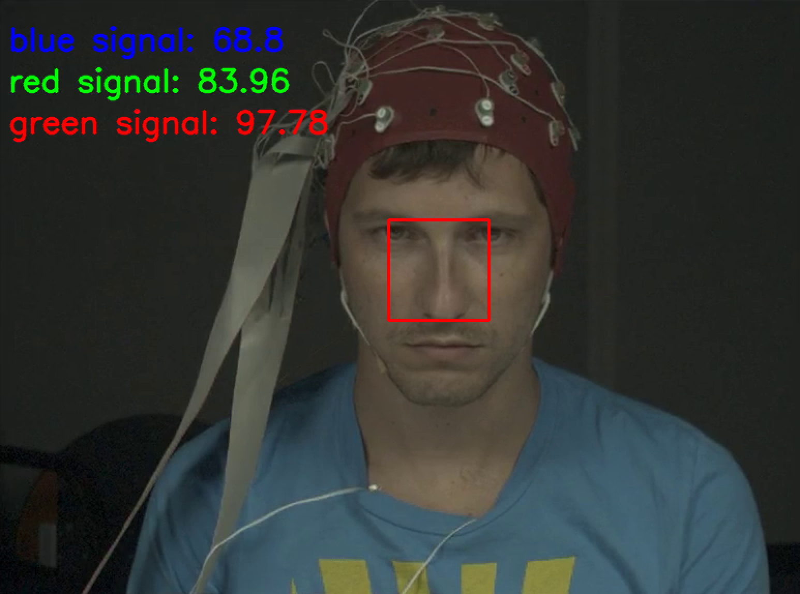
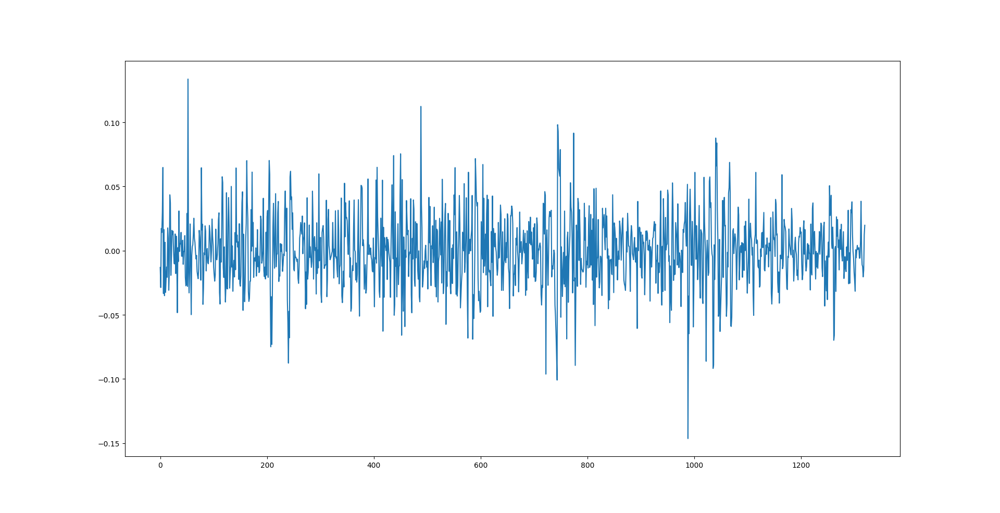

Heart Rate Detection Using Remote Photoplethysmography
David Hass, Spencer Mullinix, Hogan PopeFall 2020 ECE 4554/5554 Computer Vision: Course Project
Virginia Tech
Abstract
Currently heart rate is an attribute that can be incredibly difficult to measure without being in close proximity to the patient. However, by using modern Computer Vision techniques, a close approximation to heart rate can be discovered with nothing more than a live video feed.Teaser figure
An example of what we hope the final project to look like.
Introduction
Finding a client's heart rate either for health, polygraph, or other reasons, is an issue that classically requires close proximity. However, with recent developments in remote photoplethysmography, this is no longer necessarily the case. If a stable version of this can be created and easily deployed, it would allow for better remote healthcare work. As well as improvements in other areas where being remote can help lower costs or increase availability. This project will be done entirely in the RBG domain, as part of the aim is to make these tools possible to as wide an array of people as possible. Hopefully being able to make them deployable on nearly all modern laptops, as well as potentially smartphones. One of the ways this issue has been approached in the past, specifically in the realm of smart phones, is through the use of fingerprint scanners. However, one of the benefits of being able to do this entirely via camera, is that while fingerprint scanners are becoming increasingly common in smartphones, they are all but non-existent in laptops, and many other devices that already have integrated cameras. Thus using only a camera would increase the domain of devices that could be supported.Approach
We plan to implement an image processing pipeline aimed towards extracting a subject's blood volume pulse (BVP) signal, and from that, their pulse rate with a technique called remote photoplethysmography (rPPG). The algorithms will be fed a video of a subject, and process each frame of the video to extract BVP data. There are many ways to achieve this goal; we will experiment with two approaches in parallel. The first rPPG algorithm we’ll implement involves statistical and spectral analysis, and the second one involves using deep learning methods. We hope that through implementing both, we'll be able to see which techniques are most effective and combine useful aspects from each.The spectral method we will implement is inspired by Poe et al. [1] and consists of roughly 3 portions: ROI detection, preprocessing and extraction, and pulse rate calculation. The first of which is aimed to calculate the location of the subject's face to measure the BVP signal. We used the Open Computer Vision (opencv) library to utilize Haar Cascades to accomplish this. After their face is segmented, each RGB channel in the face-image will be averaged and normalized, resulting in one measurement per channel per frame in the video. These measurements will be gathered into three vectors and decomposed into three independent source signals using independent component analysis (ICA). These signals represent the fluctuations in color caused by variations in blood volume, and the one with the strongest power spectrum peak will be further analyzed. We then filter the signal further in the time and frequency domains with a 5 point moving-average and then apply a hamming window bandpass filter with cuttoffs from 0.7 to 4 Hz. Since the sampling rate of the video varies from clip to clip, we used a cubic spline interpolation to fill out the values before applying the bandpass filter. The bandpass filter and the cubic spline interpolation were implemented with the help of the Scipy library. After filtering our data, we can calculate the interbeat intervals, and thus the heart rate.
The second approach we will take is to implement a convolutional neural network to estimate a PPG signal. The model will use the difference between two frames of face-images as input, and attempt to estimate the PPG signal at that instance. The face image will be generated through segmentation using Haar Cascades, just as in our first approach. While the precise architecture has not been determined, similar studies have used upwards of 10 convolutional layers and 5 pooling layers [2].
Experiments
We will be able to compare our methods to other popular methods of RPPG(Remote Photoplethysmography) as seen in the table below.In this table, the values listed in each cell is the Signal-to-Noise-Ratio (SNR).
| Category | Challenge | G(2007) | G(2008) | PCA(2011) | ICA(2011) | CHROM(2013) | PBV(2014) | 2SR(2014) | Spectral Method | Nueral Network |
|---|---|---|---|---|---|---|---|---|---|---|
| Skin Type | Type I-II | 2.67 | 7.55 | 5.85 | 6.51 | 6.47 | 5.57 | 7.44 | TBD | TBD |
| Type III | 2.07 | 7.89 | 5.38 | 6.61 | 6.21 | 6.26 | 7.90 | TBD | TBD | |
| Type IV-V | -0.49 | 6.40 | 2.25 | 4.56 | 5.43 | 4.04 | 6.60 | TBD | TBD | |
| Luminance | Stationary | 8.10 | 10.14 | 8.70 | 11.61 | 9.42 | 6.57 | 10.53 | TBD | TBD |
| Rotation | 0.81 | 3.34 | 1.46 | 4.04 | 3.63 | 6.36 | 6.16 | TBD | TBD | |
| Talking | -0.62 | 3.75 | 0.46 | 3.11 | 3.99 | 4.01 | 5.33 | TBD | TBD | |
| Recovery | Low | -3.07 | 4.67 | -0.60 | 1.78 | 2.66 | 1.95 | 4.93 | TBD | TBD |
| Medium | -3.19 | 4.97 | -0.79 | 1.65 | 3.62 | 3.15 | 5.26 | TBD | TBD | |
| High | -8.19 | 4.11 | -6.51 | -0.82 | 3.52 | 3.52 | 4.84 | TBD | TBD | |
| Skin Type | Biking | -6.39 | -3.38 | -4.21 | -5.50 | 0.68 | 0.57 | -0.28 | TBD | TBD |
| Stepping | -12.59 | -9.06 | -11.41 | -12.51 | -3.13 | -2.85 | -4.50 | TBD | TBD | |
| Overall | Average | -1.90 | 3.67 | 0.05 | 1.92 | 3.86 | 3.56 | 4.93 | TBD | TBD |
Data Sets
HCI tagging database: This database is videos and images of 30 test subjects' biometric reactions to stimuli. This dataset includes images and biometric data for these subjects.OSF rPPG: This dataset covers provide RGB images and videos that are tagged with the foreground and background of the image as well as the biometrics of the people in the image.
COHFACE dataset: This dataset consists of 160 minutes of 40 individuals of varying genders with tagged biometric data. The only downside to this database is that we will need assistance gaining access.
Another option for data is to build our own test cases with images generated via mobile phone and heart rates captured the same way.
Experimental Methodology
Our testing approach will consist of two phases of testing. The first phase will consist of preliminary tests that test the initial operating capability of our project. Phase one will test the algorithm on data of people of the same skin tone, gender, with no facial hair, under ideal lighting conditions, with the test subject facing the camera straight on from a fixed distance. This methodology of testing will allow students to determine the algorithms operating capacity before other variables are introduced. The second phase of testing will introduce the variables that were fixed in the first phase. Each variable will be changed independently of the rest so to isolate that particular variable. This will enable students to evaluate the algorithms performance in specific test cases.This methodology for testing the algorithm allows for complete testing of variables while isolating the faults. The algorithm will be successful if the algorithm can achieve ±5% in phase one. Success is more difficult to define for the second phase of testing. Success in the second phase will be rated on initial performance versus improvement. If a test case in phase two has ±10% error then it is considered a success. If the error is greater than ±10% the success criteria will be defined by the amount of improvement that can be achieved due to tweaking the algorithm.
Test Cases
We will perform an experiment measuring the effect of subject distance from the camera on the accuracy of the derived PPG signal, compared to a reference measurement from a pulse oximeter sensor. We believe that distance may influence accuracy, due to decreasing pixel density of the face-image as the subject moves further from the camera. To test this, we will record 1 minute videos of the subject 0.5 meters from the camera, 1 meter from the camera, and 2 meters from the camera. Variables such as camera location, lighting, and video quality will be held constant. We expect that the derived PPG signals of further away subjects will have a higher signal-to-noise ratio, and thus be less accurate.We will also perform an experiment with the attempt to measure the program's ability to track a single face within a video, regardless of motion, both linear and rotational. This could potentially be one of the most challenging tests the program undergoes, as the heart rate is measured from very minor movements of the face, so moving the face throughout the video could drastically affect the results. As with the experiment listed above, these tests will be performed by recording 1 minute videos of the subject while they move their head at varying rates, the rest of the video, lighting and quality, will remain constant. We expect to see a decrease in the accuracy of the program as the basis of tracking heart rate is based on very precise motion.
An experiment will be performed on the image quality that is necessary to get valid data. One of the main flaws of image processing is the general lack of resistance to noisy data. One of the tests will add noise to the testing images and compare the accuracy. The other image quality test will be image resolution. This will involve downsampling the testing images to different degrees and taking metrics at each step. The expected performance in both of these situations will be decreased accuracy. The goal is to determine how robust the algorithm is. This will be achieved by incrementally testing by adding more noise/downsampling and comparing the results.
Progress Report 1 11/01/2020
Facial Recognition
The facial recognition software for the project is at a good place. Currently, the software takes the input of a xml data from teh HCI Tagging Dataset. This data is then parsed for faces using Open CV. Then a bounding box is drawn around the center of the face to be used in thData Pipeline
Signal Filtering
Qualitative results
These results will be changed upon completion of the project, but show some of the progress made so far.First, the facial detection via Haar Cascades can be seen here. With the RBG data overlaid onto the image.

When we plot that data raw we get the following

This data on it's own is almost useless, which is why the need for data processing comes in. That data processing is where we are now, trying to convert our captured data into useable information about the patients vitals.
Citations
1. Poh, M.-Z., McDuff, D.J., Picard, R.W.: Advancements in noncontact, multiparameter physiological measurements using a webcam. IEEE Trans. Biomed. Eng. 58, 7–11 (2011)2. Zhan, Q. et al. “Analysis of CNN-based remote-PPG to understand limitations and sensitivities.” Biomedical optics express 11 3 (2020): 1268-1283.